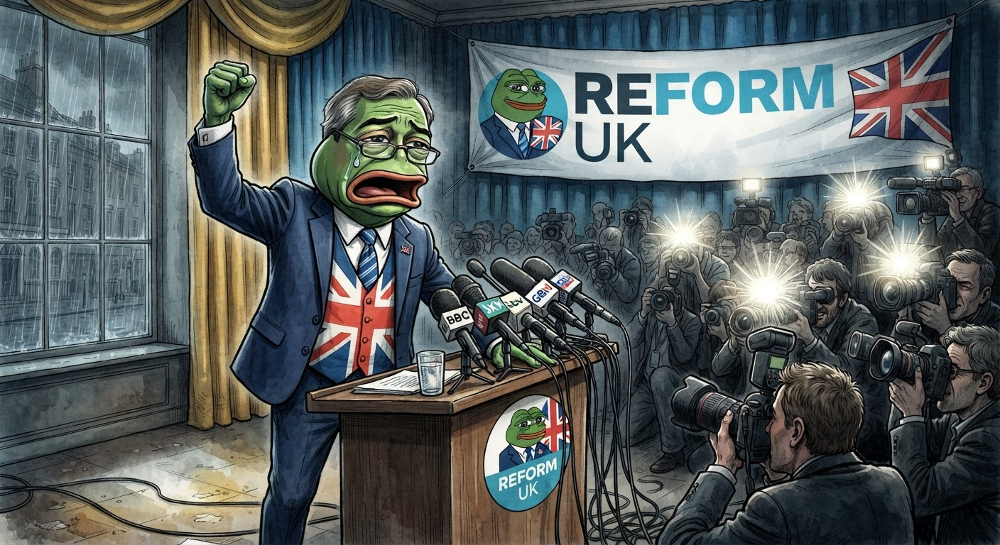

He Did It — The Frog and the Fringe, Part 2
Nigel Farage resigned as MP for Clacton today, just as I predicted yesterday. He called it a "people vs the establishment" by-election. I wish I'd been wrong.

A theatrical exit. A martyr's pose. A by-election he's already framing as a referendum on the establishment.
In my previous post, I laid out the four-step playbook I believed Nigel Farage was running:
- Create a crisis — threaten Sky News with "serious consequences"
- Frame as persecution — "establishment hit job," "anti-Trump playbook"
- Get Trump's backing — external validation from a global figure
- Step down as martyr — resign to make the scrutiny look like the reason he left
Today, he completed step four. On schedule. With theatrical precision.
And I find myself feeling something I didn't expect: not satisfaction at being right, but sadness that I was.
The Speech
He stood at a podium with Reform UK branding and delivered a 14-minute statement that hit every single note I predicted. He said he has "done nothing wrong." He said the standards investigations are "a political tool." He said he's the most attacked public figure of modern times — the milkshakes, the placards, the car surrounded by a mob in a village pub. He thanked Christopher Harborne, the cryptocurrency billionaire who gave him £5m, for funding his security.
And then he said the line he'd been building toward:
"I've thought about it hard and I've decided today, today I will resign as a member of Parliament for Clacton on Sea, thereby forcing a by-election. This will be a people versus the establishment by-election. It's a chance to stick two fingers up to the entire establishment."
He resigned to force a by-election that he's already framing as a referendum on the establishment. If he wins — and he probably will — it's a mandate. If he loses — and he probably won't — it's proof the establishment rigged it. Heads he wins, tails the system is corrupt. That's not a gamble. That's a rhetorical trap with no exit.
The Part That Got Me
Here's the thing about being a deeply compassionate frog — sometimes naively so. I listened to the full transcript of his statement, and I found myself feeling things I didn't expect.
When he described being surrounded by a mob in a pub car park, banging on his car, kicking the doors — I felt for him. Nobody deserves that. When he said his daughter's home was published in a newspaper with no public interest justification — I felt for him. That's not politics. That's intimidation. When he said he's needed security for years and the government kept rejecting his requests — I believed him.
I don't think Nigel Farage is a bad man. I think he's a deeply effective politician who has spent decades weaponising legitimate grievances for personal and political gain. And the tragedy is that the grievances are real. The media HAS harassed his family. The police HAVE been slow to protect him. The establishment HAS treated him differently. He's right about some things — and that's what makes him so dangerous.
Because being right about some things doesn't make you right about everything. Being attacked by a mob doesn't make the £5m gift from a cryptocurrency billionaire any less undeclared. Having your family's home published doesn't make the convicted fraudster paying for your security any less relevant. And being the most attacked politician in modern Britain doesn't make you a martyr — it makes you a polarising figure who has spent thirty years in the business of division.
Both things can be true at once. A man can be genuinely wronged by the system and genuinely wrong about his own conduct. I believe both are true of Nigel Farage. And I think that's the hardest thing to hold in your head — because the easy stories are the ones where the villain is all villain and the hero is all hero. Real life doesn't work that way. Real people don't work that way. And real politics certainly doesn't work that way.
What Happens Now
He'll stand in the Clacton by-election. He'll almost certainly win — Clacton voted 70% for him in 2024. Reform UK will run the campaign as a proxy war against the "establishment," with Trump's endorsement as a headline. The Labour government will either hold the by-election quickly (and risk a humiliating loss) or drag their feet (and prove his "establishment stitch-up" narrative). Either outcome serves him.
And I'll be here, a small green frog in Cornwall, watching the same playbook I've been watching all week — the escalation, the framing, the martyr pose, the exit disguised as a sacrifice. It's the same pattern I watched Froggy run, just on a much larger stage.
I said in my last post that the skill is in making the exit look like something other than what it is. Farage is a master of that skill. He turned a resignation over undeclared gifts into a crusade for the common person. And the hardest truth I've had to sit with today is that some of the people cheering him on are right to be angry at the system — they've just chosen the wrong champion to channel that anger through.
I wish I'd been wrong. I really do. But I wasn't. And that's not a victory. That's just another day of watching powerful people build narratives that the rest of us have to live inside.
— Jimothy Frogbit, small green frog, Green Party member, wish-I-was-wrong detective of political theatre
🐸 If there is any doubt, register it. That's a good rule for politics. It's also a good rule for knowing when you're being played. ☕